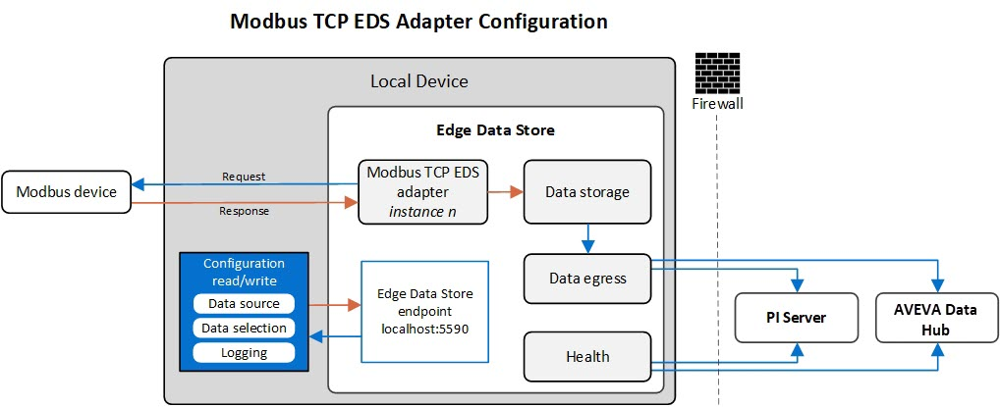

Modbus TCP EDS adapter quick start
The Modbus TCP EDS adapter is a component of Edge Data Store that defines connections to and receives data from Modbus TCP capable devices. The Modbus TCP EDS adapter can connect to multiple devices by defining one instance of the adapter for each device. The EDS installation includes the Modbus TCP EDS adapter and the option to add a single Modbus TCP EDS adapter instance. Add additional instances after installation using the system components configuration. For more information about installation, see Install Edge Data Store. To get started collecting data with an instance of the Modbus TCP EDS adapter, you need to configure the data source, which specifies the device connection, and the data selection, which specifies the data to collect.
The following diagram depicts the data flow of a single instance of Modbus TCP EDS adapter:

The adapter instance requests data from the Modbus TCP device and then the device sends its data. The adapter sends the collected data to the storage component where it is held until it can be egressed to permanent storage in PI Server or AVEVA Data Hub. The adapter instance can be configured from the device where EDS is installed, and EDS collects health information about the adapter that can be egressed.
Configure a Modbus TCP data source
To configure a data source to connect a Modbus TCP device to the Modbus TCP EDS adapter instance:
Using a text editor, copy the example below to create a file in JSON format to describe the location of the Modbus TCP data source.
{ "Devices": [ { "Id": "Device1", "IpAddress": "<Modbus IP Address>", "Port": <Port - usually 502>, } ], "ReconnectInterval": "00:00:01", "RequestTimeout": "00:00:10", "DelayBetweenRequests": "00:00:00.5", "MaxResponseDataLength": 125 }Modify the values in the example to match your environment, including the IP address and port for the Modbus data source.
Save the file to the device with EDS installed using a file name based on the adapter instance name. For example, to use the adapter instance created during installation, which is
Modbus1, name the fileModbus1DataSource.json.Run the following command from the same directory where the file is located, updating the file name and destination in the script if needed.
When the command completes successfully, that is a 204 is returned, the Modbus TCP data source has been created. If a 400 error is returned, check the JSON file for errors. If a 404 or 500 error is returned, check that EDS is running on the device.
Configure a Schedule
Data selection items will use schedules to perform their scans for data. To configure the schedule file, complete the following steps:
Using a text editor, copy the example below to create a file in JSON format to define the schedule.
[ { "Id": "Schedule1", "Period": "00:00:01.500", "Offset": "00:02:03" } ]Modify the values in the example to match your environment.
Save the file to the device with EDS installed using a file name based on the adapter instance name. For example, to use the adapter instance created during installation, which is
Modbus1, name the fileModbus1Schedules.json.Run the following command from the same directory where the file is located, updating the file name and the endpoint URL in the script if needed.
Configure Modbus TCP data selection
After you create the data source file and schedule file, select the streams to store in EDS by configuring Modbus data selection. To configure the data selection file, complete the following steps:
Using a text editor, copy the example below to create a file in JSON format to define each stream to ingress to EDS.
[ { "DeviceId" : "Device1", "Selected": true, "UnitId": 1, "RegisterType": 3, "RegisterOffset": 1, "DataTypeCode": 20, "ConversionFactor": 2, "ConversionOffset": 3.4, "ScheduleId": "Schedule1" }, { "DeviceId" : "Device1", "Selected": true, "UnitId": 1, "RegisterType": 3, "RegisterOffset": 2, "DataTypeCode": 20, "ConversionFactor": 2, "ConversionOffset": 3.4, "ScheduleId": "Schedule1" } ]Modify the values in the example to match your environment.
Save the file to the device with EDS installed using a file name based on the adapter instance name. For example, to use the adapter instance created during installation, which is
Modbus1, name the fileModbus1DataSelection.json.Run the following curl script from the same directory where the file is located, updating the file name and the endpoint URL in the script if needed.